[comment]: # (Comments aren't rendered when exporting to PDF) [comment]: # (They are here to create a slideshow using markdown-slides) [comment]: # (mdslides presentation.md --include [subfolder containing images]) [comment]: # (Set theme: https://revealjs.com/themes/) [comment]: # (Set code theme: https://highlightjs.org/) [comment]: # (Pass optional settings to reveal.js: https://revealjs.com/config/) [comment]: # (markdown: { smartypants: true }) [comment]: # (3 exclamations mean a horizontal slide break, 3 bars mean vertical slide break) [comment]: # (Set size parameters) <!-- [comment]: # (width: 1920) --> <!-- [comment]: # (height: 1080) -->  <center><big><big><big><b> Politecnico di Milano <br><br>Master in Space Engineering <br>Academic Year 2022 / 23<br><br>Orbital mechanics course </b></big></big></big></center>
<center><big><big><b> Final project: Interplanetary and planetary <br>explorer missions </b></big></big></center>
| 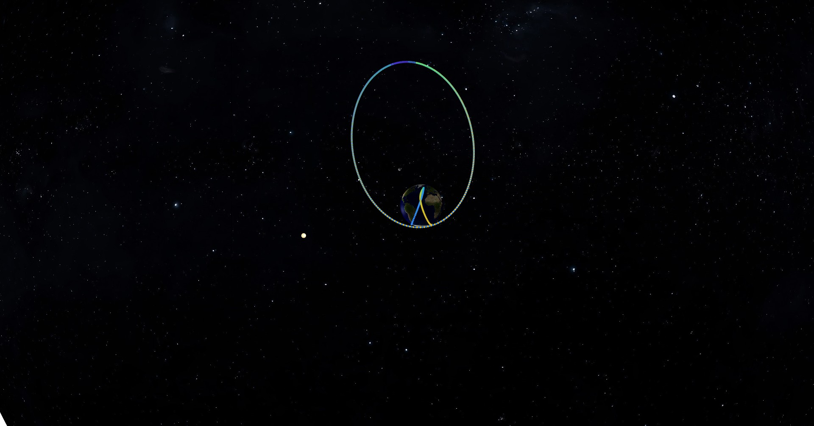 | | :----------------------------------------------------------: |
<right><big><b> VASP GROUP, NUMBER 2204 <br><br> Alessandro Michelazzi (10709804) <br><br> Pablo Arbelo (10904636) <br><br> Stefano Marinelli (10705548) <br><br> Veronica Cerni (10700624) <br><br> <br><br> </b></big></right> <center><big><big><b>January 2023</b></big></big></center> <div style="page-break-after: always; break-after: page;"></div>
# Symbology $\mathbf{a}$: Semi-major axis $\mathbf{e}$: Eccentricity $\mathbf{i}$: Inclination $\mathbf{\Omega}$: Right ascension of the ascending node $\mathbf{\omega}$: Argument of periapsis $\mathbf{\theta}$: True anomaly **NEO**: Near Earth Object $\mathbf{r_p}$: Radius of pericentre $\mathbf{T _{syn}}$: Synodic period $\mathbf{ToF}$ : Time of Flight $\mathbf{m_S}$: Mass of Saturn $\mathbf{R_S}$: Mean radius of Saturn $\mathbf{m_{Sun}}$: Mass on the Sun $\mathbf{r_S}$: Mean orbital radius of Saturn
# Assignment 1: Interplanetary Explorer >The PoliMi Space Agency is carrying out a feasibility study for a potential Interplanetary Explorer Mission visiting an asteroid in the Solar System, with an intermediate flyby on a planet.
### 1.0.1 Assigned parameters | Departure Planet | Flyby Planet | Arrival NEO | Earliest Departure | Latest arrival | | ---------------- | ------------ | ----------- | ------------------ | -------------- | | Earth | Saturn | 85 | 2026/09/30 | 2061/03/28 | ## 1.1 Design strategy For this preliminary mission analysis, the design is based on the patched conics method and the manoeuvres are considered to be impulsive.
### 1.1.1 Time window and constraints The given problem has three degrees of freedom: departure time from Earth and the times of flight of two elliptical transfer trajectories. Therefore, to find the best solution, a grid search over the three degrees of freedom was adopted. The selection of an appropriate time window for departure was made considering the planets $T _{syn}$. However, since the problem concerns three celestial bodies, $T _{syn}$ were used to compute a similar general repetition period. In order to do so, the $T _{syn} ^{Earth-Saturn}$ and $T _{syn} ^{Saturn-NEO85}$ were each multiplicated by a vector containing integer numbers from 1 to 20 (The maximum integer number was decided considering the time constraints of the problem, more precisely the time between the earliest departure date and the latest arrival date)
By computing the difference between each term of the first vector with each term of the second vector and by selecting the minimum value of these differences, it was possible to find after how many synodic periods the three-body configuration would approximately repeat itself. The results are shown in the table below. | (3 body config. repetition = 3BR) | $ T_{syn}$ Earth - Saturn | $T_{syn}$ Saturn - NEO 85 | | :-------------------------------: | :-----------------------: | :-----------------------: | | Number of days | 378.06 | 554.11 | | N° repetition until next 3BR | 19 | 13 | | N° days until next 3BR | 7183.09 | 7203.39 | The departure window was therefore defined from the earliest departure date until 7183.09 days later.
Finally, windows for flyby of Saturn and arrival to Near Earth Object 85 were fixed considering parabolic time for an Earth-Saturn transfer and for a Saturn-NEO 85 transfer. A grid search over the three degrees of freedom was used to compute a minimum parabolic time ($\Delta t_{par,min}$ ). Flyby and arrival windows were defined as follows: *Flyby window*: from (earliest departure + $\Delta t_{par,min}$) to (latest arrival - $\Delta t_{par,min}$) *Arrival window*: from (earliest fly-by + $\Delta t_{par,min}$) to (latest arrival) Regarding the flyby, Saturn rings were considered as an additional constraint for the minimum pericentre possible: $$ r_{p,min} = R_S + h_{rings,max} $$ With $R_S$ the mean radius of Saturn and $h_{ring,max}$ the maximum altitude of the outermost ring.
### 1.1.2 Grid search To find the most efficient mission a grid search in a two step-approach was implemented. A first coarse search throughout the defined time windows can locate approximately the best regions for the transfer. Then, a second iterative grid search is carried out for each region. In order to refine the solution, at each iteration the time window around the solution found is decreased. For each departure, flyby and arrival times, two transfer arcs are computed thanks to a Lambert's problem solver. The first one goes from Earth position to Saturn position, whereas the second one from Saturn position to the asteroid position. Finally, a Saturn flyby is computed which allows the change of trajectory from the first transfer to the second transfer orbit.
The total cost of the mission is computed as follows: $$ \Delta v _{tot} = ||\Delta v _1|| + ||\Delta v _2||+||\Delta v _{ga}|| $$ with $\Delta v _1$ the change in velocity required for the injection manoeuvre from Earth orbit to the first transfer arc, $\Delta v _2$ the change in velocity required for the arrival manoeuvre from second transfer orbit to the asteroid orbit and $\Delta v _{ga}$ the impulsive manoeuvre of the powered gravity assist flyby. The $\Delta v _{tot}$ of each iteration is then stored in a three-dimensional array, so as to compute the minimum total cost at the end of the grid search.
Each grid search can by schematized by the following simplified script: ```matlab [1|2|8|9-17|3-7|1-20] for each possible departure date for each possible flyby date Compute ToF of first transfer arc if ToF is not feasible Skip this iteration end Compute first Lambert’s arc (Earth -> Saturn) for each possible arrival date Compute ToF of second transfer arc if ToF is not feasible Skip this iteration end Compute second Lambert’s arc (Saturn -> NEO 85) Compute Powered Gravity assist if a solution has been found Store total mission cost in the 3D array end end end end ```
The precision of this logic is strongly related on the discretisation of the time windows: the smaller the time step, the higher the capability to find the absolute minimum; but higher is even the computational cost. Given the relatively small orbital period of the asteroid and the great width of the arrival window, a smaller time step was preferred for the arrival window. Same reasoning for the departure window. Instead, the discretisation of the flyby window can be made up of bigger time steps since the orbital period of Saturn is relatively big.
## 1.2 Solution According to the computational logic described in the previous paragraph, the most efficient transfer computed is the following: | Departure date | Fly-by date | Arrival date | Mission cost | Total Time of Flight | | :--------------------- | :-------------------- | :--------------------- | :----------- | :------------------- | | 2041/12/30 at 17:22:27 | 2046/08/29 at 1:10:59 | 2051:05:30 at 15:54:25 | 18.885 km/s | 3437.94 days | The mission departs from Earth approximately 15 years after the earliest departure possible.
However, by adding a constraint on the maximum departure date (e.g. 10 years), another solution can be found: | Departure date | Fly-by date | Arrival date | Mission cost | Total Time of Flight | | ---------------------- | --------------------- | ---------------------- | ------------ | -------------------- | | 2030/07/31 at 03:00:00 | 2035/01/01at 10:13:45 | 2039/04/19 at 19:12:50 | 20.889 km/s | 3184.68 | This mission lasts a little bit less but its cost has increased of almost 2 km/s. However, since the purpose of this preliminary mission analysis is to find the most efficient solution in terms of mission cost, the former option is preferred.
### 1.2.1 Heliocentric trajectories The two transfer orbits associated to the chosen solution can be characterised by the following Keplerian elements: | | $a$ $[AU]$ | $e$ $[-]$ | $i$ $[deg]$ | $\Omega$ $[deg]$ | $\omega$ $[deg]$ | $\theta_{dep}$ $[deg]$ | $\theta_{arr}$ $[deg]$ | | ---------------- | ----------- | ---------- | ------------ | ----------------- | ----------------- | ----------------------- | ----------------------- | | Earth to Saturn | 6.059715 | 0.838 | 4.449 | 99.391 | 354.467 | 5.533 | 168.390 | | Saturn to NEO 85 | 5.965137 | 0.837 | 3.874 | 242.558 | 189.158 | 190.621 | 348.796 | Time of Flight of the two transfers are respectively: $$ ToF_1 = 1702.33\ days \qquad ToF_2 = 1735.61\ days $$ Whereas the magnitude of the two manoeuvres (the first one to inject from Earth orbit to first transfer orbit and the second one to go from second transfer orbit to asteroid orbit) are respectively: $$ \Delta v_1 = 10.899\ km/s \qquad \Delta v_2 = 7.986\ km/s $$
| 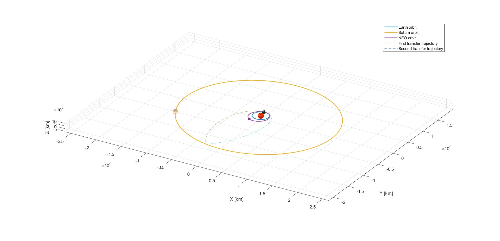 | | :----------------------------------------------------------: |
| 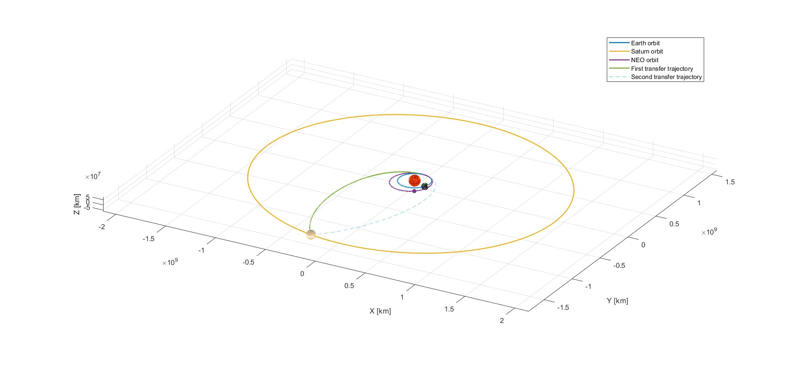 | | :----------------------------------------------------------: |
| 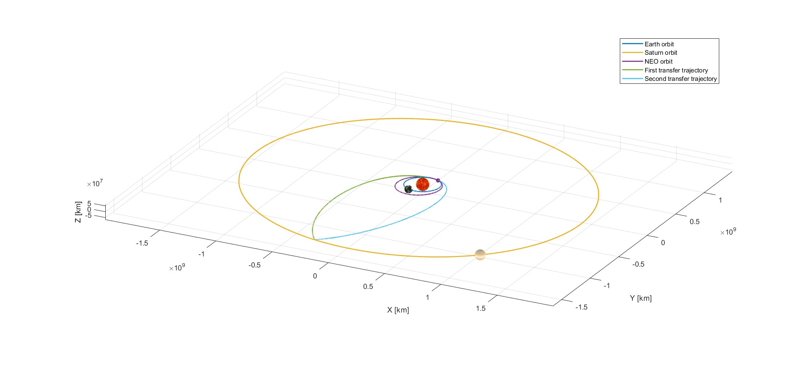 | | :----------------------------------------------------------: | | <b>Fig.1.1 - Position of planets respectively at departure, flyby and arrival</b> |
### 1.2.2 Powered Gravity Assist Knowing the forementioned trajectories, incoming and outcoming heliocentric velocities at Saturn are also known. Therefore, it is possible to characterise the flyby hyperbolae and the impulsive burn provided at their the common pericentre. This burn is needed since the incoming and outcoming velocities differ, thus a change from one hyperbolic orbit to another is required. For this analysis, a finite sphere of influence was considered with a radius of: $$ r_{SOI} = r_S \left(\frac{m_S}{m_{Sun}}\right)^{\frac 25} = 5.4654 \cdot 10^7 \ km $$
A breakdown of this portion of the mission can be seen in the following tables: | $r_p$ $[km]$ | $\Delta v_{pga}$ $[km/s]$ | $\Delta v_{fb} = \left \| \underline{V}^+ - \underline{V}^- \right \|$ $[km/s]$ | $ToF_{flyby}$ $[days]$ | | ------------- | --------------------------- | ------------------------------------------------------------ | ------------------------ | | 715945.946 | 2.41 $\cdot 10^{-9}$ | 7.206 | 189.21 | with $\underline{V}^-$ being the $S/C$ absolute heliocentric velocity before the flyby and $\underline{V}^+$ being the $S/C$ absolute heliocentric velocity after the flyby. | | $a$ $ [km]$ | $e$ $[-]$ | $i$ $[deg]$ | $\Omega$ $[deg]$ | $\omega$ $[deg]$ | | ------------------- | ----------- | ---------- | ------------ | ----------------- | ----------------- | | Incoming hyperbola | -952735.491 | 1.751 | 175.372 | 221.618 | 319.056 | | Outcoming hyperbola | -952735.492 | 1.751 | 175.372 | 221.618 | 319.056 |
| 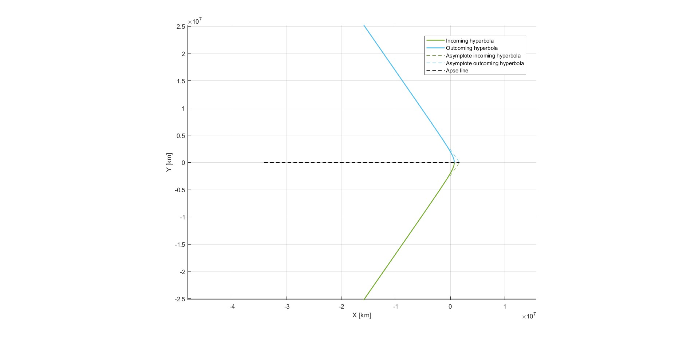 | | :----------------------------------------------------------: | | <b>Fig.1.2 - Flyby (perifocal frame)</b> |
| 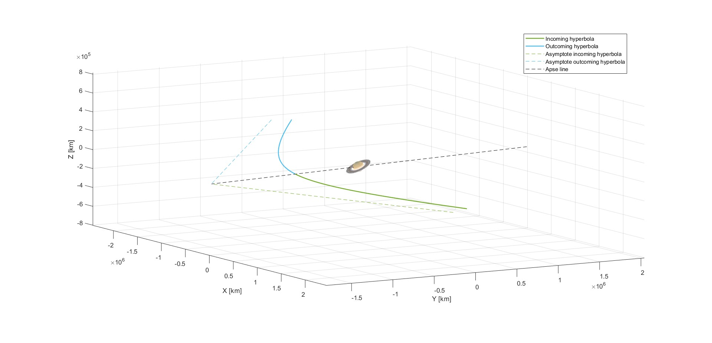 | | :----------------------------------------------------------: | | <b>Fig.1.3 - Flyby zoom in (Saturn centred ecliptic frame)</b> |
### 1.2.3 Conclusions A way to validate the results obtained is to consider the first transfer (Earth-Saturn) and the second transfer (Saturn – Near Earth Object 85) independently and search for the most efficient option for each case. The manoeuvre to insert and eject from Saturn orbit were not considered in the computation of the minimum cost of each single transfer, given the fact that in the actual mission a flyby of Saturn is carried out.
| 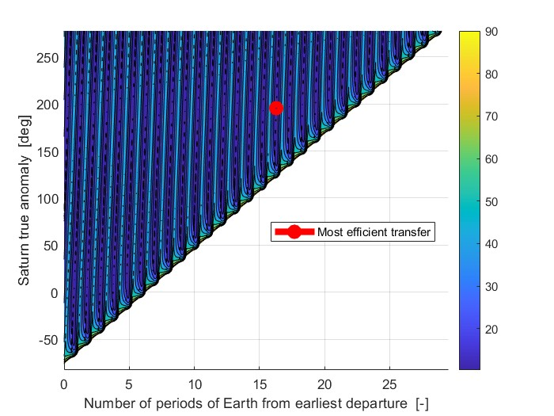 | | :----------------------------------------------------------: |
| 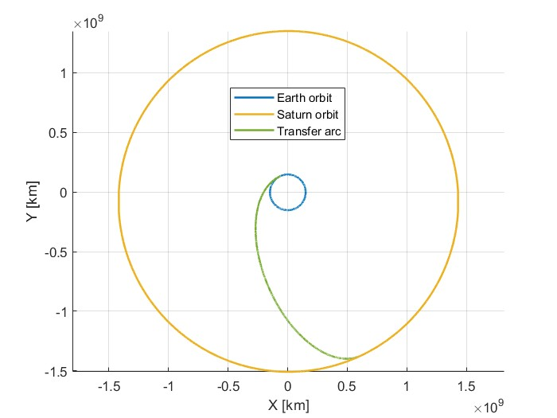 | | :----------------------------------------------------------: |
| <img src="assets/StoNEO_porkchop.jpg" alt="StoNEO_porkchop" style="zoom:200%;" /> | | :----------------------------------------------------------: |
| 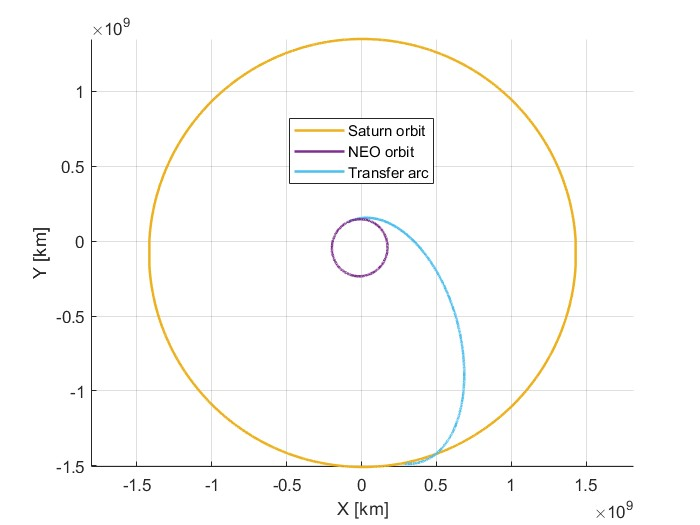 | | :----------------------------------------------------------: | | <b>Fig.1.4 Porkchop plots and best transfers found</b> |
From the images above, it can be inferred that the most efficient transfers happen when Saturn is near its apocentre. Furthermore, in the best solutions found the planets have a very similar configuration compared to the one of the actual mission. It is possible to conclude that the solution found for this preliminary mission analysis is reasonable and it is an efficient one given the mission constraints.
# Assignment 2: Planetary Explorer >The PoliMi Space Agency wants to launch a Planetary Explorer Mission, to perform Earth observation.
> >As part of the mission analysis team, you are requested to carry out the orbit analysis and ground track estimation. You have to study the effects of orbit perturbations, and compare different propagation methods. Also, you have to characterize the ground track, and propose an orbit modification to reach a repeating ground track (for better communications with our network of ground stations).
## 2.1 Nominal orbit summary ### 2.1.1 Assigned* parameters | $\mathbf{a}$ | $\mathbf{e}$ | $\mathbf{i}$ | $\mathbf{\Omega}$ | $\mathbf{\omega}$ | $\mathbf{\theta _{t=0}}$ | | -------- | -------- | -------- | -------- | -------- | -------- | | <u>26,619 km</u> | <u>0.7452</u> | <u>62.9089º</u> | 60º | 30º | 0º | **Initial date**: November 1st, 2021 at 0h 0' 0'' GMT <u>**Repeating groundtrack k:m ratio:** 2</u> *****RAAN, argument of periapsis and initial true anomaly were left to our criteria, which were chosen in order to have a good movie and after fixing the initial date.
### 2.1.2 Assigned perturbations - **J<sub>2</sub> effect** due to Earth's oblateness<sup><a href="#ref2.1">[2.1]</a></sup> $$ \Large \mathbf{a_{J_2}} = \frac{3}{2}\frac{J_2 \mu R_E^2}{r^5}\left [ \left ( 5\frac{z^2}{r^2}-1 \right )x\widehat{\mathbf{i}} + \left ( 5\frac{z^2}{r^2}-1 \right )y\widehat{\mathbf{j}} + \left ( 5\frac{z^2}{r^2}-3 \right )z\widehat{\mathbf{k}}\right ] $$ <u>**J<sub>2</sub>** = 0.0010826</u> as provided by the function *astroConstants*
- **Atmospheric drag** due to the absorption and reflection of massive particles against the spacecraft<sup><a href="#ref2.1">[2.1]</a></sup> $$ \Large \mathbf{\ddot{r}} = -\frac{1}{2}C_D\frac{A}{m}\rho (h,t)v_{rel}\mathbf{v_{rel}} $$ $$ \Large where: \hspace{4mm} \mathbf{v_{rel}} = \mathbf{v}-\mathbf{\omega_E\wedge} \mathbf{r} $$ The density at very high altitudes significantly depends day/night cycles and the solar activity at any given time, which by itself makes the modelling of aerodynamic drag a challenge. Moreover, the atmosphere is very heterogeneous in chemical composition at high h and that has to be taken into account aswell. There are several models, like the Jacchia-Bowman 2008,<sup><a href="#ref2.2">[2.2]</a></sup> that adress these issues with varying levels of success. However, we are going to employ a simple exponential approximation that depends only on the altitude: $$ \Large \rho = \rho_0 exp\left ( -\frac{h-h_0}{H_0} \right ) \hspace{2mm};\hspace{2mm} \rho_0 = 2\cdot 10^{-8} \hspace{2mm};\hspace{2mm} h_0 = 122 km \hspace{2mm};\hspace{2mm} H_0 = H|(\rho=3\cdot 10^{-12},h=400km) $$ <u>**C<sub>D</sub>** = 2.1</u> ; <u>**A/m** = 0.0095 m<sup>2</sup>/kg</u> The reference density values for both heights were selected from usual values.<sup><a href="#ref2.3">[2.3]</a></sup>
<div style="page-break-after: always; break-after: page;"></div> ### 2.1.3 Other perturbations In the last point, the comparison with real data, we include an additional third model that features the following perturbations: - **Atmospheric drag** (Explained earlier) - **Solar radiation pressure**<sup><a href="#ref2.4">[2.4]</a></sup> $$ \Large \mathbf{\ddot{r}} = -\upsilon \phi _EC_R\frac{A}{m}\mathbf{\widehat{r}} \hspace{2mm};\hspace{2mm} \phi _E = \phi _0\left ( \frac{R _{sun}}{r _{sun}} \right )^2 \hspace{2mm};\hspace{2mm} \phi _0 = \sigma T _{sun}^4 $$ $$ \Large where: \hspace{4mm} \sigma = Stefan-Boltzmann\hspace{2mm}constant, \phi = Solar\hspace{1mm}flux $$ $$ \Large and: \hspace{4mm} \upsilon = shadow function(r,r _{sun},R_E,R _{sun}) $$ This shadow function is implemented in the code and is explained in the referenced book.<sup><a href="#ref2.4">[2.4]</a></sup>
- **Earth gravitational model 1996** (And therefore substitutes the J<sub>2</sub>-only perturbation)<sup><a href="#ref2.4">[2.4]</a></sup><sup><a href="#ref2.5">[2.5]</a></sup><sup><a href="#ref2.6">[2.6]</a></sup><sup><a href="#ref2.7">[2.7]</a></sup> $$ \Large U(r,\phi,\xi) = -\sum_{n=2}^{360}\frac{\mu R_E^n}{r^{n+1}}\sum_{m=0}^{n}\left ( C_{nm}cos(m\phi)+S_{nm}sin(m\phi) \right )\widetilde{P}_{nm}\left ( \xi \right ) $$ $$ \Large where: \hspace{4mm} r^2 = x^2+y^2+z^2\hspace{1mm};\hspace{1mm} \phi = tan^{-1}\left ( \frac{y}{x} \right )\hspace{1mm};\hspace{1mm}\xi = \frac{z}{r}\hspace{1mm};\hspace{1mm}\widetilde{P} = norm.\hspace{1mm}Legendre \hspace{1mm}polynom. $$ Deriving -U(x,y,z) gives the perturbing accelerations we are seeking. With this it's also possible to calculate the geoid's undulation, which shows Earth's uneven gravity field:
| <img src="assets/undulation.png" alt="undulation" style="zoom:150%;" /> | | :----------------------------------: | | <b>Fig.2.1 - Geoid's undulation</b> |
- **Sun and Moon 3rd body perturbations**<sup><a href="#ref2.4">[2.4]</a></sup> $$ \Large \mathbf{\ddot{r}} = GM_2\left ( \frac{\mathbf{r_2-r}}{\left \| r_2-r \right \|^3}-\frac{\mathbf{r_2}}{r_2^3} \right ) $$ Where **r** and **r<sub>2</sub>** are the position vectors of the spacecraft and the planet of mass **M<sub>2</sub>** relative to the Earth, **2** being the Sun or the Moon. - **Relativistic effects**<sup><a href="#ref2.4">[2.4]</a></sup> $$ \Large \mathbf{\ddot{r}} = -\frac{GM_E}{r}\left [ (4\frac{GM}{c^2r}-\frac{v^2}{c^2})\mathbf{r}+\frac{4}{c^2}(\mathbf{r}\cdot \mathbf{v})\mathbf{v} \right ] $$
## 2.2 Groundtrack As a spacecraft orbits around a celestial body, the path drawn on it is deviated from an ellipse by the rotation of the body and the perturbations affecting the spacecraft. From here, the solver used is **ode113** with **1e-13** **relative** tolerance and **1e-14** **absolute** tolerance.
### 2.2.1 Orbit GT |  | | :----------------------------------------------------------: | |  | |  | | <b>Fig.2.2 - 1 orbit, 1 day & 10 day groundtrack (unperturbed-perturbed)</b> |
### 2.2.2 Repeating GT The orbit is already very close to having the k:m ratio of 2. Solve for the new semi-major axis from the equations:<sup><a href="#ref2.8">[2.8]</a></sup> $$ \Large T^2 = 4\pi ^2\frac{a^3}{\mu }\hspace{1mm};\hspace{1mm}\frac{T}{T_E} = \frac{m}{k}\hspace{1mm};\hspace{1mm}T_E = 23h\hspace{1mm}56m\hspace{1mm}4.1s $$ [comment]: # (Tables after equations don't render properly in the slide) | **Semi-major axis a** | **Repeating GT a** | **Delta** | | -------- | -------- | -------- | | 26,619 km | 26,562 km | -57.236 km | | 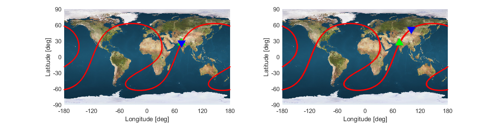 | | :----------------------------------------------------: | | <b>Fig.2.3 - k = 2, m = 1 (unperturbed-perturbed)</b> |
However, when propagated further into the future, the perturbed one deviates significantly: |  | | :------------------------------------------------------: | | <b>Fig.2.4 - k = 20, m = 10 (unperturbed-perturbed)</b> | The aerodynamic drag reduces e but most importantly, a (smaller period, shorter gt), while J<sub>2</sub> acts on the RAAN (shifted gt). J<sub>2</sub> could be compensated with a new a and since the drag perturbation is very insignificant throughout the orbit (400km perigee height) we would require very low fuel burns.
## 2.3 Perturbed orbit propagation When choosing the propagation time, our criteria has been propagating until having multiple periods of the keplerian elements' long term oscillations, and in our case at they do not require many orbits because our simplified perturbations do not depend on the sun or the moon, but only on the orbit's initial state. We do expect some interaction between the two, as the semi-major axis plays a role in the secular variations due to J<sub>2</sub>, so we are propagating for 10 orbits. 100 orbits were used for the filtering to minimize the effect of the edges on the secular values.
### 2.3.1 Cartesian vs. Gauss's equations methods The Gauss's planetary equations allow us to integrate directly on the keplerian elements, after transforming the perturbations to either RSW or TNH frames, as opposed to the simple method of integrating the equation of motion in cartesian coordinates.<sup><a href="#ref2.4">[2.4]</a></sup> After 10 orbits, the relative error between both methods continues near the set relative tolerance. | 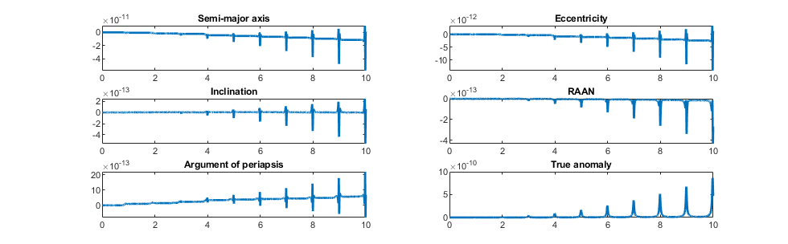 | | :-----------------------------------------------------: | | <b>Fig.2.5 - Relative error (car-kep)/[a,1,pi,2pi]</b> |
In terms of computational cost, our implementation of the Gauss's planetary eqs. is about 20% slower than plain cartesian, but this is because the drag function was developed in cartesian coordinates and we transform the perturbation directly from cartesian to RSW, when it would be faster to work on TNH. When removing the drag perturbation and leaving the J<sub>2</sub>, the cartesian method is more than 30% slower. We find that the computational complexity is very problem dependent and since we worked out the EGM96 model, SRP and other perturbations in cartesian we are going to proceed with them for the rest of the project.
### 2.3.2 High frequency filtering | (rounded to 3 d) | $\mathbf{\dot{a}}$ (km/s) | $\mathbf{\dot{e}}$ (-/s) | $\mathbf{\dot{i}}$ º/s | $\mathbf{\dot{\Omega }}$ º/s | $\mathbf{\dot{\omega }}$ º/s | $\mathbf{\dot{\theta }}$ º/s | | -- | ------------------- | ---------------- | --------------- | -------- | ------------------------- | ---------------- | | **Secular variation** | -2.93e-7 | -3.45e-12 | 2.97e-11 | -1.79e-6 | 7.32e-8 | 8.35e-3 | | **R<sup>2</sup>** | 0.94 | 0.94 | 0.69 | 1.00 | 1.00 | 1.00 | The secular variations above have been obtained by applying a low-pass filter in the form of a moving window on the perturbed orbit, and a linear regression with y-intercept to get the slope. The size of the moving window is 1 orbital period. To evaluate the goodness of fit we can calculate the R-squared statistic, which tells us how well the linear fit predicts the secular variations. The low value of R-squared for the inclination points to a lower confidence. After testing with and without each perturbation, it seems this effect comes from the J<sub>2</sub>, even though we suspected it could come from the effect of the wind on the drag's force direction, but this is one order of magnitude smaller.
| 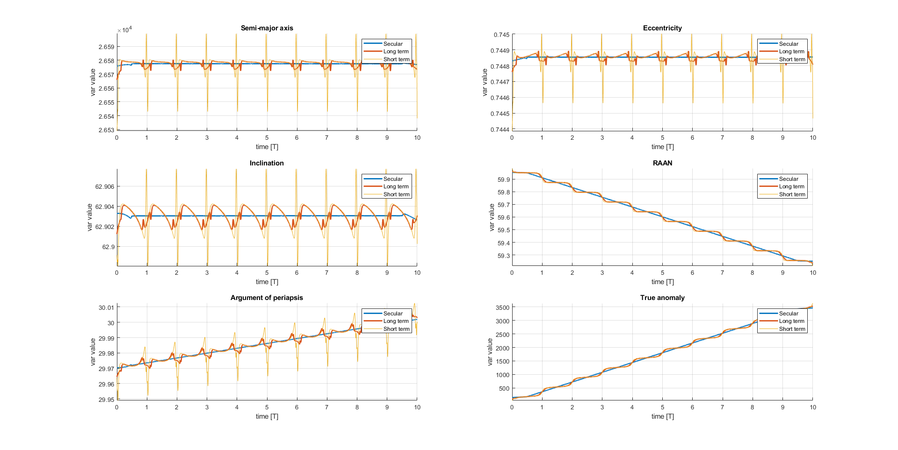 | | :----------------------------------------------------------: | | <b>Fig.2.6 - Filtered data in moving windows of 100, 25 & 5% of the initial orbital period</b> |
## 2.4 Evolution of the orbit ### 2.4.1 Short term We have made two videos of the first 3 orbits. First one shows the orbit from a fixed point relative to Earth's center: https://www.youtube.com/watch?v=nJ_P-hUO-3g And the second shows the orbit from the point of view of the spacecraft, centered on Earth: https://www.youtube.com/watch?v=ByNQOdoczXE
<iframe src="https://www.youtube.com/embed/nJ_P-hUO-3g?autoplay=0" style="width: 100vw; height: 100vh;"></iframe>
<iframe src="https://www.youtube.com/embed/ByNQOdoczXE?autoplay=0" style="width: 100vw; height: 100vh;"></iframe>
### 2.4.2 Long term | 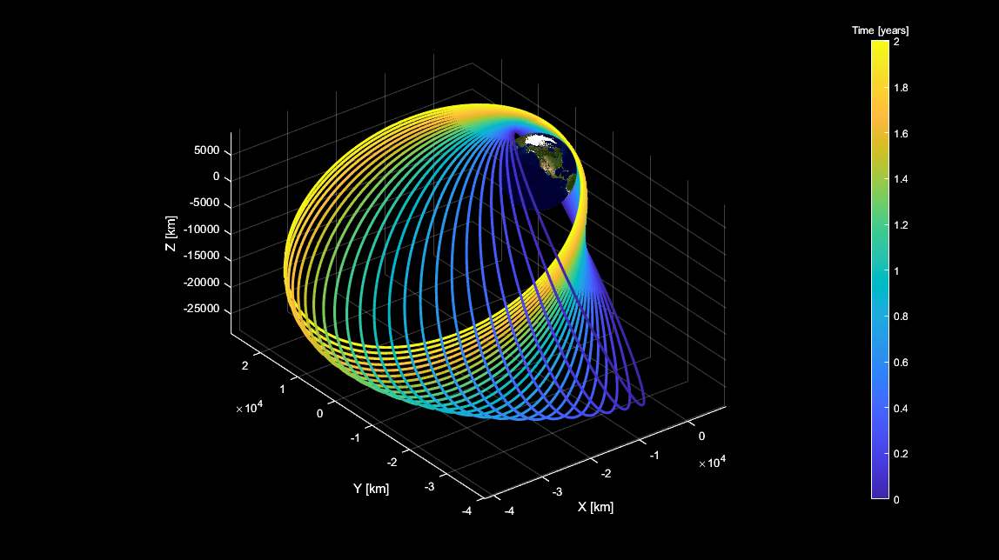 | | :----------------------------------------------------------: | | <b>Fig.2.7 - Long term propagation (not showing every orbit)</b> | Propagated for two years or around 1464 orbits from the initial assigned orbital conditions and perturbations.
<div style="page-break-after: always; break-after: page;"></div> ## 2.5 Real data comparison ### 2.5.1 Object selection and procedure The aim was to find the tracked space object with the closest 3 first orbital elements: | t=0 | $\mathbf{a}$ | $\mathbf{e}$ | $\mathbf{i}$ | $\mathbf{\Omega}$ | $\mathbf{\omega}$ | $\mathbf{\theta}$ | | ------------------- | ---------------- | --------------- | -------- | -------- | -------- | -------- | | **Assigned** | 26,619 km | 0.7452 | 62.9089º | - | - | - | | **Real (01-11-2021)** | 26,910 km | 0.7399 | 62.5711º | 74.4297º | 278.065º | 174.3877º | The object is designated as SL-6 R/B(2), a block-ML from a Molniya rocket that is orbiting the planet since 1999. It is catalogued in NORAD as 25850U and it's described<sup><a href="#ref2.9">[2.9]</a></sup> as a <u>900kg</u>, cylinder shaped (2.6x2.58x2.58m) rocket body, with an <u>average cross section of 7.8824</u> and radar cross section of 2 sq. meters.
The procedure was the following: - After selecting the object in tracking websites<sup><a href="#ref2.10">[2.10]</a></sup><sup><a href="#ref2.11">[2.11]</a></sup>
The procedure was the following: - After selecting the object in tracking websites<sup><a href="#ref2.10">[2.10]</a></sup><sup><a href="#ref2.11">[2.11]</a></sup> - We obtained its TLEs from space-track.org from 1-11-2021 to 1-11-2022,<sup><a href="#ref2.12">[2.12]</a></sup> propagated them in the NASA Horizons website (to obtain very accurate ephemerides for every timestep) for the same duration but every hour,<sup><a href="#ref2.13">[2.13]</a></sup> and finally compared them with two models;
The procedure was the following: - After selecting the object in tracking websites<sup><a href="#ref2.10">[2.10]</a></sup><sup><a href="#ref2.11">[2.11]</a></sup> - We obtained its TLEs from space-track.org from 1-11-2021 to 1-11-2022,<sup><a href="#ref2.12">[2.12]</a></sup> propagated them in the NASA Horizons website (to obtain very accurate ephemerides for every timestep) for the same duration but every hour,<sup><a href="#ref2.13">[2.13]</a></sup> and finally compared them with two models; - The one with assigned perturbations
The procedure was the following: - After selecting the object in tracking websites<sup><a href="#ref2.10">[2.10]</a></sup><sup><a href="#ref2.11">[2.11]</a></sup> - We obtained its TLEs from space-track.org from 1-11-2021 to 1-11-2022,<sup><a href="#ref2.12">[2.12]</a></sup> propagated them in the NASA Horizons website (to obtain very accurate ephemerides for every timestep) for the same duration but every hour,<sup><a href="#ref2.13">[2.13]</a></sup> and finally compared them with two models; - The one with assigned perturbations - And the full model that was detailed in [section 2.1.3](###2.1.3 Other perturbations).
The <u>coefficient of drag was assumed to be 2.2</u> like other similar space objects.<sup><a href="#ref2.14">[2.14]</a></sup> Other assumptions include the <u>temperature of the Sun's surface to be constant and equal to 5778 K</u>, <u>Earth's axial tilt to be a constant 23.436º</u> (data from January 2021) or the <u>radiation pressure coefficient to be 1.05</u>, calculated iteratively until achieving the best results and testing in the [0.7,1.3] range.
### 2.5.2 Results and discussion | 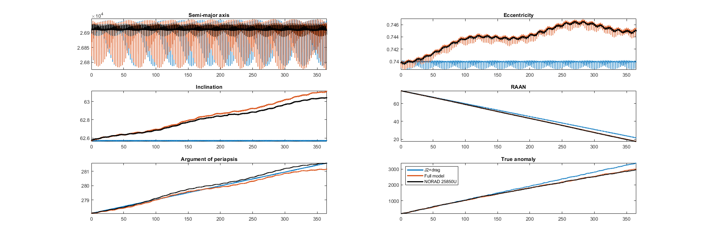 | | :----------------------------------------------------------: | | <b>Fig.2.8 - 1 year propagation of historic data vs. J<sub>2</sub>+drag model vs. Full model</b> |
We are also computing the secular values. This time the moving window size chosen for the low-pass filter is half a year to account for the longest oscillation in the simulated perturbations, which is Earth's translation around the Sun. | variation + [R<sup>2</sup>] | $\mathbf{\dot{a}}$ (km/s) | $\mathbf{\dot{e}}$ (-/s) | $\mathbf{\dot{i}}$ º/s | $\mathbf{\dot{\Omega }}$ º/s | $\mathbf{\dot{\omega }}$ º/s | $\mathbf{\dot{\theta }}$ º/s | | ------------------- | ---------------- | --------------- | -------- | -------- | -------- | -------- | | **NORAD 25850U** | -2.06e-8 [0.98] | 1.51e-10 /s [0.95] | 1.29e-8 º/s [0.99] | -1.54e-6 º/s [0.99] | 9.96e-8 º/s [0.99] | 7.38e-5 º/s [0.99] | | **Full model** | -1.46e-8 [0.90] | 1.53e-10 /s [0.95] | 1.48e-8 º/s [0.99] | -1.53e-6 º/s [0.99] | 8.84e-8 º/s [0.99] | 7.54e-5 º/s [0.99] | | **Assigned model** | 9.89e-10 [0.40] | 2.19e-13 /s [0.99] | -1.00e-11 º/s [0.99] | -1.42e-6 º/s [0.99] | 9.40e-8 º/s [0.99] | 8.59e-5 º/s [0.99] |
The full model was able to much more accurately predict the short and long term variations, but also the real secular effects, always being within 1 order of magnitude in absolute terms, whereas the assigned model fell very short in relation to the shape parameters, being completely incapable of predicting them. However, the J<sub>2</sub> term alone seems enough to predict the other 3 variables. Especially evident are the two week and half a year oscillations of the Moon and Sun in the eccentricity, that are lacking in the second model.
To further improve it, we would add the effect of solid earth tides, Jupiter, ocean tides and a newer Earth model. Drag doesn't seem very important in this case, which is great because it is difficult to accurately model.
On a different note, the computational cost of the full model was much higher since it took around 5 s for the simple model and 3 h for the complex one. The most likely reason for such disparity is probably the implementation of the EGM96, which has more than 65,000 pairs of coefficients and consequently, iterations per integration step. There is probably a better way to implement it.
<div style="page-break-after: always; break-after: page;"></div> # Reference <a id="ref2.1">[2.1]</a> - [Course material Chapter 5](https://webeep.polimi.it/) <a id="ref2.2">[2.2]</a> - Bowman, B. R., Tobiska, W. K., Marcos, F. A., Huang, C. Y., Lin, C. S., & Burke, W. J. (2008). A new empirical thermospheric density model JB2008 using new solar and geomagnetic indices. *AIAA/AAS Astrodynamics Specialist Conference and Exhibit*. [DOI](https://doi.org/10.2514/6.2008-6438) <a id="ref2.3">[2.3]</a> - [Usual density values in high altitude](https://www.eoas.ubc.ca/courses/atsc113/flying/met_concepts/03-met_concepts/03a-std_atmos/index.html#:~:text=At%20that%20400%20km%20altitude,%2D12%20kg%2Fm3.) <a id="ref2.4">[2.4]</a> - Montenbruck, O., & Gill, E. (2000). Satellite Orbits. *Satellite Orbits*. [DOI](https://doi.org/10.1007/978-3-642-58351-3) <a id="ref2.5">[2.5]</a> - [EGM96 coefficients](https://cddis.nasa.gov/926/egm96/getit.html) <a id="ref2.6">[2.6]</a> - [EGM96 equations](https://people.sc.fsu.edu/~lb13f/projects/space_environment/egm96.php) <a id="ref2.7">[2.7]</a> - [Fully normalized Legendre polynomials](http://mitgcm.org/~mlosch/geoidcookbook/node11.html) <a id="ref2.8">[2.8]</a> - [Course material Chapter 2](https://webeep.polimi.it/) <a id="ref2.9">[2.9]</a> - [Detailed tracking-discosweb.esoc.esa.int](https://discosweb.esoc.esa.int/objects?page=259&pageSize=100) <a id="ref2.10">[2.10]</a> - [Tracking-satview.org](https://www.satview.org/?sat_id=25850U) <a id="ref2.11">[2.11]</a> - [Tracking-2yo.com](https://www.n2yo.com/satellite/?s=25850#results) <a id="ref2.12">[2.12]</a> - [TLEs from space-track.org](https://www.space-track.org) <a id="ref2.13">[2.13]</a> - [TLE NASA-Horizons propagator](https://ssd.jpl.nasa.gov/horizons/app.html#/) <a id="ref2.14">[2.14]</a> - Mostaza Prieto, D., Graziano, B. P., & Roberts, P. C. E. (2014). Spacecraft drag modelling. In *Progress in Aerospace Sciences* (Vol. 64). [DOI](https://doi.org/10.1016/j.paerosci.2013.09.001)
# Thank you